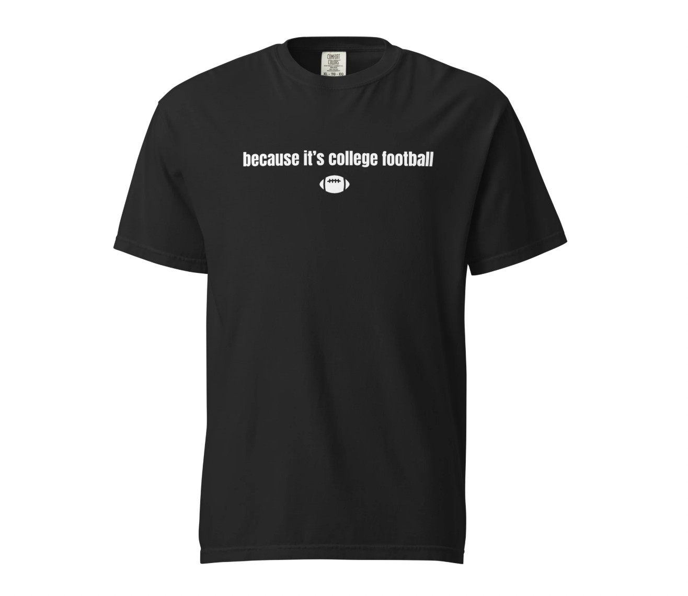
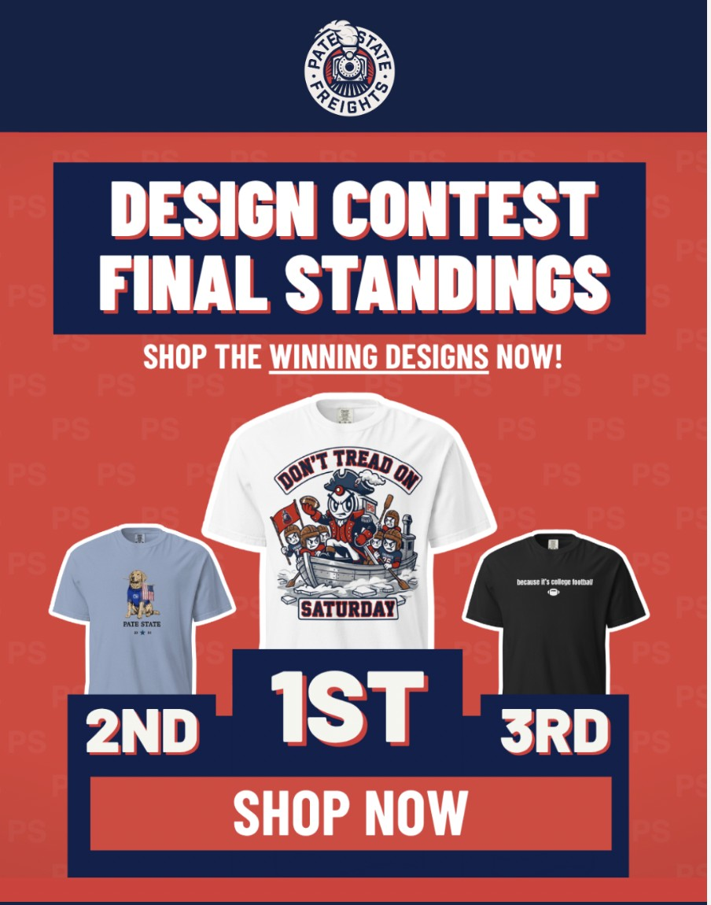

Merchandising & Graphic Design
Pate State Material Design Contest
National Apparel Design & Merchandising Competition
The Competition
The Pate State Material Design Contest invited graphic designers and college football fans nationwide to submit original apparel graphics capturing Josh Pate's brand culture and Saturday collegiate traditions, encouraging contestants to design items they want to see in the store. Five finalists' designs were chosen for an official 14-day store drop.
My Design
Original apparel graphic selected as an official finalist and released nationwide.

The Idea Behind the Design
Concept & Creative Direction
For this design, I wanted to create something that would immediately resonate with dedicated fans of Josh Pate while still being simple and wearable enough to stand on its own. Rather than creating a design that relied heavily on obvious branding, I was drawn to the idea of an “if you know, you know” concept, something fellow fans would recognize, while someone unfamiliar with the reference might simply see it as a fun college football saying.
That idea led me to the phrase “Because It’s College Football,” a line Josh Pate has used on his show. The phrase felt like representation of what his content is all about: the traditions, rivalries, unpredictability, passion, and sometimes complete chaos that make college football unique. It captures the idea that the moments, traditions, and emotions surrounding the sport do not always need an explanation, they happen because it’s college football.
3rd Place Winner & Recognition

“Beautiful in its simplicity.”
— Josh Pate, Host of Josh Pate's College Football ShowWhat I Learned / Key Takeaways
Commercial Viability in Merchandising
This project taught me the importance of designing with a specific audience in mind. I learned that a strong design does not always have to be loud or immediately recognizable to everyone, instead, subtle details and shared references can create a stronger connection with the people who understand them.